These are the monuments located in Europe that I found on the internet.
France
-
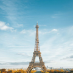
Eiffel
prev 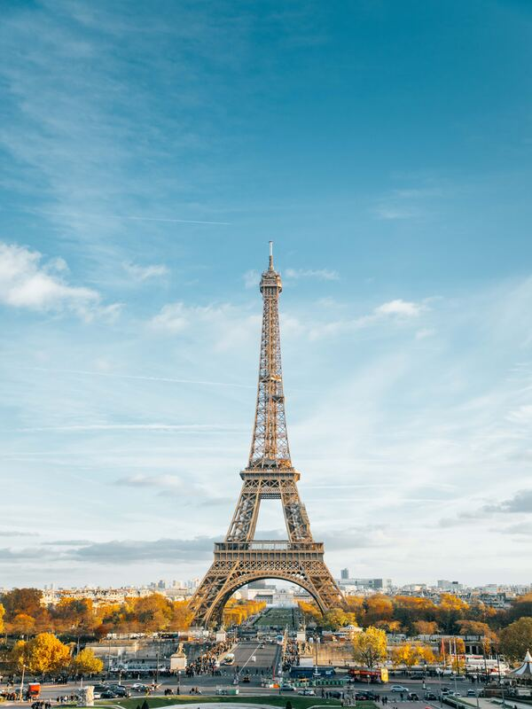next
Eiffel Tower
Champ de Mars, 5 Av. Anatole France, 75007 Paris, Prancis
E iffel Tower is a wrought-iron lattice tower on the Champ de Mars in Paris, France. It is named after the engineer Gustave Eiffel, whose company designed and built the tower from 1887 to 1889.
Locally nicknamed "La dame de fer" (French for "Iron Lady"), it was constructed as the centerpiece of the 1889 World's Fair. Although initially criticised by some of France's leading artists and intellectuals for its design, it has since become a global cultural icon of France and one of the most recognisable structures in the world. The tower received 5,889,000 visitors in 2022. The Eiffel Tower is the most visited monument with an entrance fee in the world: 6.91 million people ascended it in 2015. It was designated a monument historique in 1964, and was named part of a UNESCO World Heritage Site ("Paris, Banks of the Seine") in 1991.
The tower is 330 metres (1,083 ft) tall,[7] about the same height as an 81-storey building, and the tallest structure in Paris. Its base is square, measuring 125 metres (410 ft) on each side. During its construction, the Eiffel Tower surpassed the Washington Monument to become the tallest human-made structure in the world, a title it held for 41 years until the Chrysler Building in New York City was finished in 1930. It was the first structure in the world to surpass both the 200-metre and 300-metre mark in height. Due to the addition of a broadcasting aerial at the top of the tower in 1957, it is now taller than the Chrysler Building by 5.2 metres (17 ft). Excluding transmitters, the Eiffel Tower is the second tallest free-standing structure in France after the Millau Viaduct.
The tower has three levels for visitors, with restaurants on the first and second levels. The top level's upper platform is 276 m (906 ft) above the ground – the highest observation deck accessible to the public in the European Union. Tickets can be purchased to ascend by stairs or lift to the first and second levels. The climb from ground level to the first level is over 300 steps, as is the climb from the first level to the second, making the entire ascent a 600 step climb. Although there is a staircase to the top level, it is usually accessible only by lift. On this top, third level is a private apartment built for Gustave Eiffel's private use. He decorated it with furniture by Jean Lachaise and invited friends such as Thomas Edison.
Visit on Google Maps
-
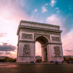
Arc de triomphe
prev 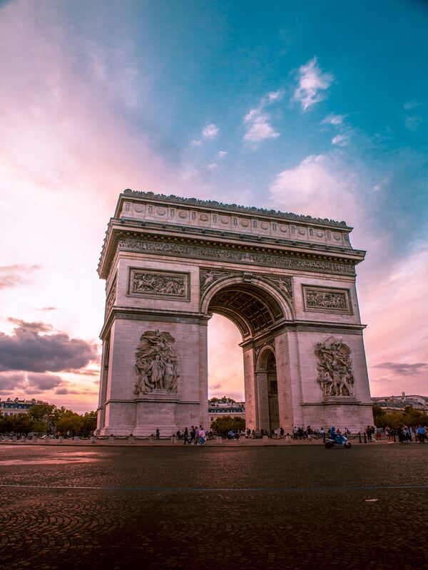next
Arc de triomphe
Pl. Charles de Gaulle, 75008 Paris, Prancis
A rc de Triomphe de l'Étoile is one of the most famous monuments in Paris, France, standing at the western end of the Champs-Élysées at the centre of Place Charles de Gaulle, formerly named Place de l'Étoile—the étoile or "star" of the juncture formed by its twelve radiating avenues. The location of the arc and the plaza is shared between three arrondissements, 16th (south and west), 17th (north), and 8th (east). The Arc de Triomphe honours those who fought and died for France in the French Revolutionary and Napoleonic Wars, with the names of all French victories and generals inscribed on its inner and outer surfaces. Beneath its vault lies the Tomb of the Unknown Soldier from World War I.
The central cohesive element of the Axe historique (historic axis, a sequence of monuments and grand thoroughfares on a route running from the courtyard of the Louvre to the Grande Arche de la Défense), the Arc de Triomphe was designed by Jean Chalgrin in 1806; its iconographic programme pits heroically nude French youths against bearded Germanic warriors in chain mail. It set the tone for public monuments with triumphant patriotic messages. Inspired by the Arch of Titus in Rome, Italy, the Arc de Triomphe has an overall height of 50 m (164 ft), width of 45 m (148 ft) and depth of 22 m (72 ft), while its large vault is 29.19 m (95.8 ft) high and 14.62 m (48.0 ft) wide. The smaller transverse vaults are 18.68 m (61.3 ft) high and 8.44 m (27.7 ft) wide.
Paris's Arc de Triomphe was the tallest triumphal arch until the completion of the Monumento a la Revolución in Mexico City in 1938, which is 67 m (220 ft) high. The Arch of Triumph in Pyongyang, completed in 1982, is modeled on the Arc de Triomphe and is slightly taller at 60 m (197 ft). The Grande Arche in La Défense near Paris is 110 metres high. Although it is not named an Arc de Triomphe, it has been designed on the same model and from the perspective of the Arc de Triomphe. It qualifies as the world's tallest arch.
Visit on Google Maps
italy
-
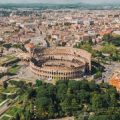
Colosseum
prev 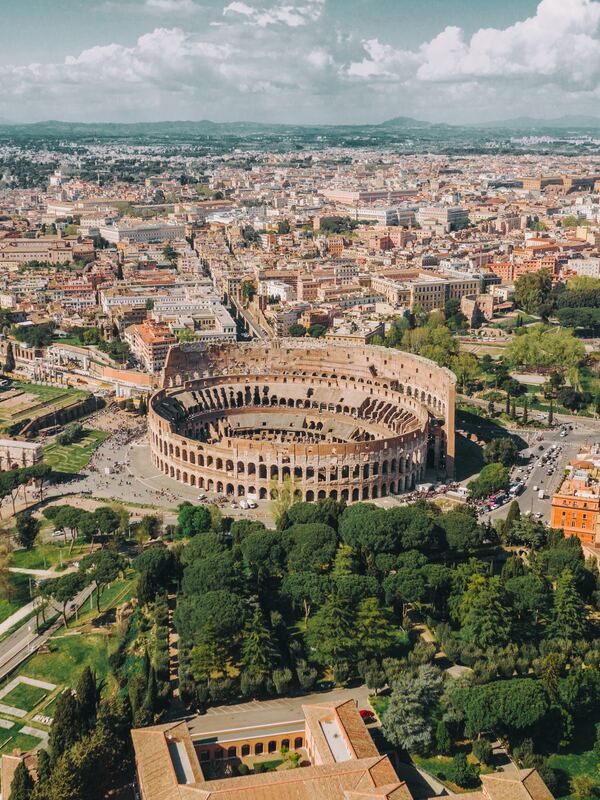next
Colosseum
Piazza del Colosseo, 1, 00184 Roma RM, Italia
C olosseum is an elliptical amphitheatre in the centre of the city of Rome, Italy, just east of the Roman Forum. It is the largest ancient amphitheatre ever built, and is still the largest standing amphitheatre in the world, despite its age. Construction began under the emperor Vespasian (r. 69–79 AD) in 72 and was completed in 80 AD under his successor and heir, Titus (r. 79–81). Further modifications were made during the reign of Domitian The three emperors who were patrons of the work are known as the Flavian dynasty, and the amphitheatre was named the Flavian Amphitheatre by later classicists and archaeologists for its association with their family name (Flavius)..
The Colosseum is built of travertine limestone, tuff (volcanic rock), and brick-faced concrete. It could hold an estimated 50,000 to 80,000 spectators at various points in its history, having an average audience of some 65,000; it was used for gladiatorial contests and public spectacles including animal hunts, executions, re-enactments of famous battles, and dramas based on Roman mythology, and briefly mock sea battles. The building ceased to be used for entertainment in the early medieval era. It was later reused for such purposes as housing, workshops, quarters for a religious order, a fortress, a quarry, and a Christian shrine.
Although substantially ruined by earthquakes and stone robbers taking spolia, the Colosseum is still a renowned symbol of Imperial Rome and was listed as one of the New 7 Wonders of the World. It is one of Rome's most popular tourist attractions and also has links to the Roman Catholic Church, as each Good Friday the Pope leads a torchlit "Way of the Cross" procession that starts in the area around the Colosseum. The Colosseum is depicted on the Italian version of the five-cent euro coin.
Visit on Google Maps
-
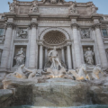
trevi fountain
prev 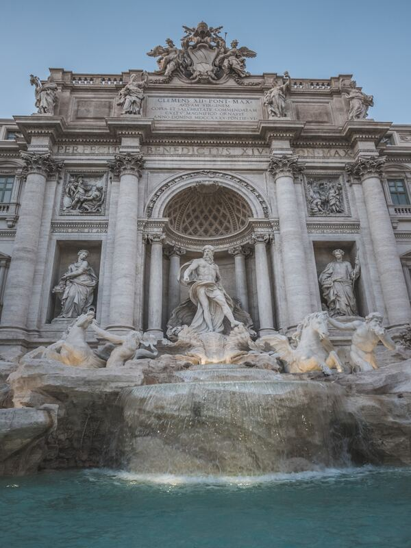next
trevi fountain
Pl. Charles de Gaulle, 75008 Paris, Prancis
T revi Fountain (Italian: Fontana di Trevi) is an 18th-century fountain in the Trevi district in Rome, Italy, designed by Italian architect Nicola Salvi and completed by Giuseppe Pannini in 1762[1] and several others. Standing 26.3 metres (86 ft) high and 49.15 metres (161.3 ft) wide,[2] it is the largest Baroque fountain in the city and one of the most famous fountains in the world.
History
The fountain, at the junction of three roads (tre vie),[3] marks the terminal point[4] of the "modern" Acqua Vergine—the revived Aqua Virgo, one of the aqueducts that supplied water to ancient Rome. In 19 BC, supposedly with the help of a virgin, Roman technicians located a source of pure water some 13 km (8.1 mi) from the city. (This scene is presented on the present fountain's façade.) However, the eventual indirect route of the aqueduct made its length some 22 km (14 mi). This Aqua Virgo led the water into the Baths of Agrippa. It served Rome for more than 400 years.[5]
Visit on Google Maps
-
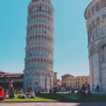
Pisa
prev 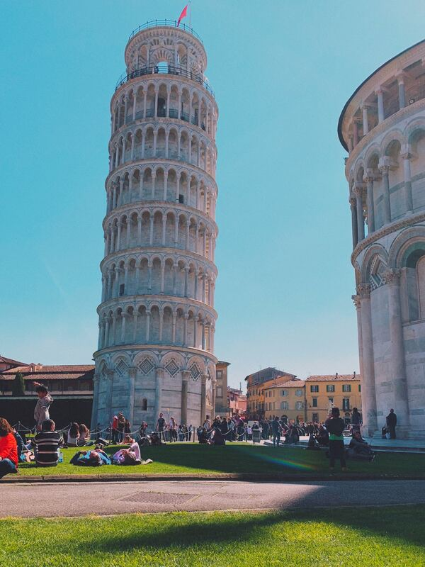next
Pisa tower
Pisa Britannica Tuscany Pisa, city, central Italy
P isa is a city and comune in Tuscany, central Italy, straddling the Arno just before it empties into the Ligurian Sea. It is the capital city of the Province of Pisa. Although Pisa is known worldwide for its leaning tower, the city contains more than twenty other historic churches, several medieval palaces, and bridges across the Arno. Much of the city's architecture was financed from its history as one of the Italian maritime republics. The city is also home to the University of Pisa, which has a history going back to the 12th century, the Scuola Normale Superiore di Pisa, founded by Napoleon in 1810, and its offshoot, the Sant'Anna School of Advanced Studies.
Education
Pisa hosts the University of Pisa, especially renowned in the fields of Physics, Mathematics, Engineering and Computer Science. The Scuola Superiore Sant'Anna and the Scuola Normale Superiore, the Italian academic élite institutions are noted mostly for research and the education of graduate students.
Construction of a new leaning tower of glass and steel 57 meters tall, containing offices and apartments was scheduled to start in summer 2004 and take 4 years. It was designed by Dante Oscar Benini and raised criticism.
- The Scuola Normale Superiore di Pisa was founded in 1810, by Napoleonic decree, as a branch of the École Normale Supérieure of Paris. Recognized as a "national university" in 1862, one year after Italian unification, and named during that period as "Normal School of the Kingdom of Italy" (Superior Graduate Schools in Italy i.e. Scuola Superiore Universitaria).
Located at: Scuola Normale Superiore di Pisa – Piazza dei Cavalieri, 7 – 56126 Pisa (Italia)
-The Sant'Anna School of Advanced Studies of Pisa or Scuola Superiore Sant'Anna is a special-statute public university located in Pisa, Italy, emerging from Scuola Normale Superiore di Pisa and operating in the field of applied sciences, (Superior Graduate Schools in Italy i.e. Scuola Superiore Universitaria)
Located at: Scuola Superiore Sant'Anna, P.zza Martiri della Libertà, 33 – 56127 – Pisa (Italia)
- The University of Pisa or Università di Pisa, is one of the oldest universities in Italy. It was formally founded on September 3, 1343, by an edict of Pope Clement VI, although there had been lectures on law in Pisa since the 11th century. The university has Europe's oldest academic botanical garden i.e. Orto botanico di Pisa, founded 1544. The medical school of the university is sight at Azienda ospedaliero-universitaria pisana.
Located at: Università di Pisa – Lungarno Pacinotti, 43 – 56126 Pisa (Italia)
Visit on Google Maps
london
-
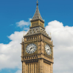
Big ben
prev 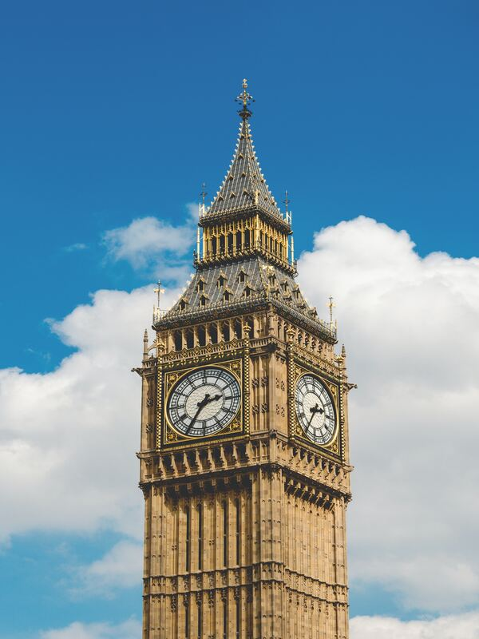next
Big ben
London SW1A 0AA, Britania Raya
B ig Ben is the nickname for the Great Bell of the Great Clock of Westminster,at the north end of the Palace of Westminster in London, England,and the name is frequently extended to refer also to the clock and the clock tower.The official name of the tower in which Big Ben is located was originally the Clock Tower, but it was renamed Elizabeth Tower in 2012 to mark the Diamond Jubilee of Elizabeth II.
The tower was designed by Augustus Pugin in a neo-Gothic style. When completed in 1859, its clock was the largest and most accurate four-faced striking and chiming clock in the world.[5] The tower stands 316 feet (96 m) tall, and the climb from ground level to the belfry is 334 steps. Its base is square, measuring 40 feet (12 m) on each side. Dials of the clock are 22.5 feet (6.9 m) in diameter. All four nations of the UK are represented on the tower on shields featuring a rose for England, thistle for Scotland, shamrock for Ireland, and leek for Wales.
Big Ben is the largest of the tower's five bells and weighs 13.5 long tons (13.7 tonnes; 15.1 short tons).It was the largest bell in the United Kingdom for 23 years. The origin of the bell's nickname is open to question; it may be named after Sir Benjamin Hall, who oversaw its installation, or heavyweight boxing champion Benjamin Caunt. Four quarter bells chime at 15, 30 and 45 minutes past the hour and just before Big Ben tolls on the hour. The clock uses its original Victorian mechanism, but an electric motor can be used as a backup.
The tower is a British cultural icon recognised all over the world. It is one of the most prominent symbols of the United Kingdom and parliamentary democracy,and it is often used in the establishing shot of films set in London.The clock tower has been part of a Grade I listed building since 1970 and a UNESCO World Heritage Site since 1987.The tower was repaired and renovated for four years between 2017 and 2021, during which the bells remained silent with few exceptions.
Visit on Google Maps
-
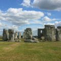
Stonehenge
prev 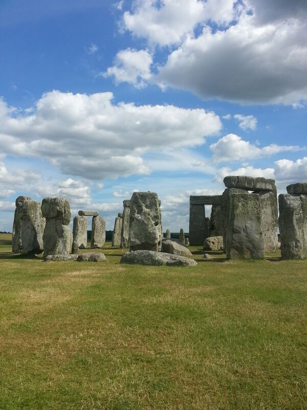next
Stonehenge
Amesbury,Wiltshire, Inggris
S tonehenge is a prehistoric monument on Salisbury Plain in Wiltshire, England, two miles (3 km) west of Amesbury. It consists of an outer ring of vertical sarsen standing stones, each around 13 feet (4.0 m) high, seven feet (2.1 m) wide, and weighing around 25 tons, topped by connecting horizontal lintel stones. Inside is a ring of smaller bluestones. Inside these are free-standing trilithons, two bulkier vertical sarsens joined by one lintel. The whole monument, now ruinous, is aligned towards the sunrise on the summer solstice. The stones are set within earthworks in the middle of the densest complex of Neolithic and Bronze Age monuments in England, including several hundred tumuli (burial mounds).
Archaeologists believe that Stonehenge was constructed from around 3000 BC to 2000 BC. The surrounding circular earth bank and ditch, which constitute the earliest phase of the monument, have been dated to about 3100 BC. Radiocarbon dating suggests that the first bluestones were raised between 2400 and 2200 BC,although they may have been at the site as early as 3000 BC.
One of the most famous landmarks in the United Kingdom, Stonehenge is regarded as a British cultural icon.It has been a legally protected scheduled monument since 1882, when legislation to protect historic monuments was first successfully introduced in Britain. The site and its surroundings were added to UNESCO's list of World Heritage Sites in 1986. Stonehenge is owned by the Crown and managed by English Heritage; the surrounding land is owned by the National Trust.
Stonehenge could have been a burial ground from its earliest beginnings.Deposits containing human bone date from as early as 3000 BC, when the ditch and bank were first dug, and continued for at least another 500 years.
Visit on Google Maps
-
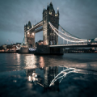
Tower bridge
prev 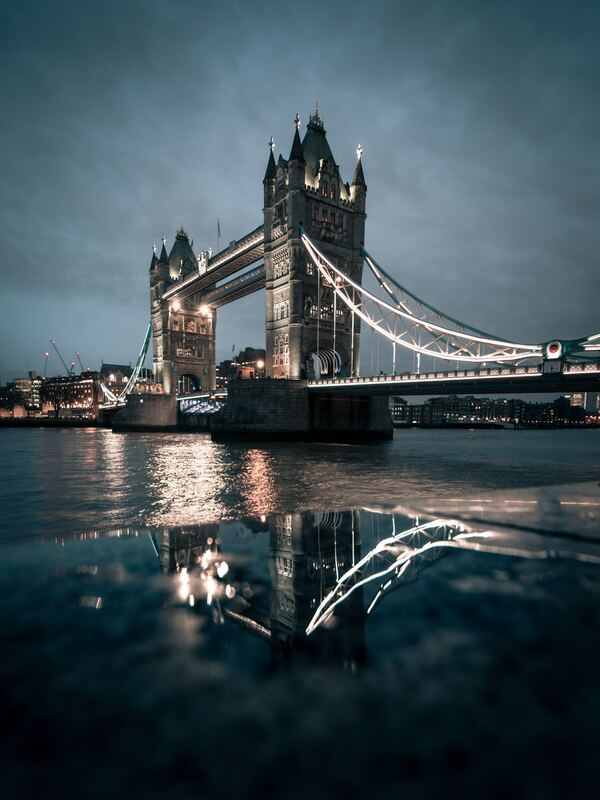next
Tower bridge
Tower Bridge Rd, London SE1 2UP, Britania Raya
T ower Bridge is a Grade I listed combined bascule and suspension bridge in London, built between 1886 and 1894, designed by Horace Jones and engineered by John Wolfe Barry with the help of Henry Marc Brunel.[1] It crosses the River Thames close to the Tower of London and is one of five London bridges owned and maintained by the Bridge House Estates, a charitable trust founded in 1282. The bridge was constructed to give better access to the East End of London, which had expanded its commercial potential in the 19th century. The bridge was opened by Edward, Prince of Wales and Alexandra, Princess of Wales in 1894.
The bridge is 800 feet (240 m) in length and consists of two 213-foot (65 m) bridge towers connected at the upper level by two horizontal walkways, and a central pair of bascules that can open to allow shipping. Originally hydraulically powered, the operating mechanism was converted to an electro-hydraulic system in 1972. The bridge is part of the London Inner Ring Road and thus the boundary of the London congestion charge zone, and remains an important traffic route with 40,000 crossings every day. The bridge deck is freely accessible to both vehicles and pedestrians, whereas the bridge's twin towers, high-level walkways, and Victorian engine rooms form part of the Tower Bridge Exhibition.
Tower Bridge has become a recognisable London landmark. It is sometimes confused with London Bridge, about 0.5 miles (800 m) upstream, which has led to a persistent urban legend about an American purchasing the wrong bridge.
Visit on Google Maps
portugal
-
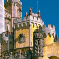
Pena Palace
prev 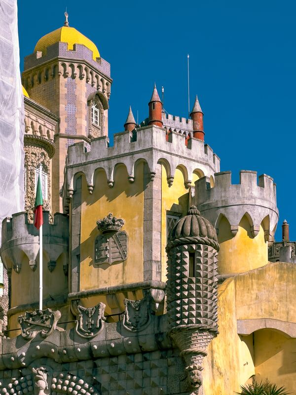next
Pena Palace
Champ de Mars, 5 Av. Anatole France, 75007 Paris, Prancis
P ena Palace is a Romanticist castle in São Pedro de Penaferrim, in the municipality of Sintra, on the Portuguese Riviera. The castle stands on the top of a hill in the Sintra Mountains above the town of Sintra, and on a clear day it can be easily seen from Lisbon and much of its metropolitan area. It is a national monument and constitutes one of the major expressions of 19th-century Romanticism in the world. The palace is a UNESCO World Heritage Site and one of the Seven Wonders of Portugal. It is also used for state occasions by the President of the Portuguese Republic and other government officials.
Park
Pena Park is a vast forested area completely surrounding the Pena Palace, spreading for over 200 hectares of uneven terrain. The park was created at the same time as the palace by King Ferdinand II, who was assisted in the task by the Baron von Eschwege and the Baron von Kessler. The exotic taste of the Romanticism was applied to the park as it was to the palace. The king ordered trees from diverse, distant lands to be planted there. Those included North American sequoia, Lawson's cypress, magnolia and Western redcedar, Chinese ginkgo, Japanese Cryptomeria, and a wide variety of ferns and tree ferns from Australia and New Zealand, concentrated in the Queen's Fern Garden (Feteira da Rainha). The park has a labyrinthic system of paths and narrow roads, connecting the palace to the many points of interest throughout the park, as well as to its two gated exits.
Visit on Google Maps
-
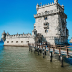
Belem tower
prev 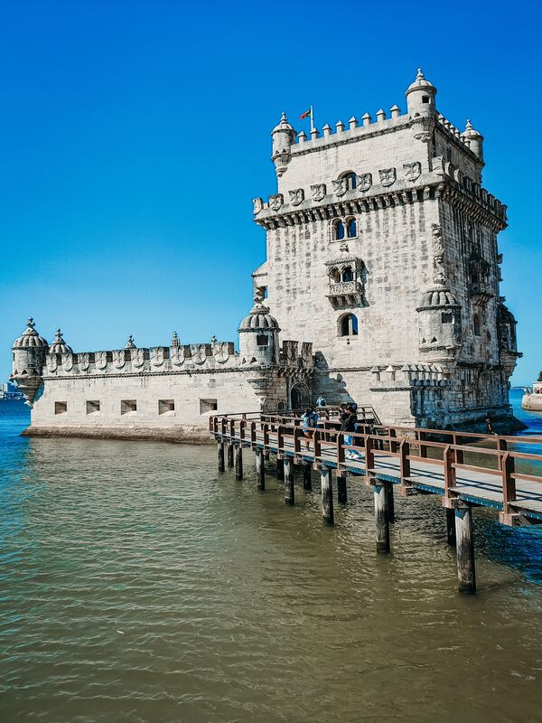next
Belem tower
Av. Brasília, 1400-038 Lisboa, Portugal
B elém Tower , officially the Tower of Saint Vincent (Portuguese: Torre de São Vicente) is a 16th-century fortification located in Lisbon that served as a point of embarkation and disembarkation for Portuguese explorers and as a ceremonial gateway to Lisbon.It was built during the height of the Portuguese Renaissance, and is a prominent example of the Portuguese Manueline style,but it also incorporates hints of other architectural styles.The structure was built from lioz limestone and is composed of a bastion and a 30-metre (100 ft),four-storey tower.
Since 1983, the tower has been a UNESCO World Heritage Site, along with the Jerónimos Monastery. It is often portrayed as a symbol of Europe's Age of Discoveries and as a metonym for Portugal or Lisbon, given its landmark status. It has incorrectly been stated that the tower was built in the middle of the Tagus and now sits near the shore because the river was redirected after the 1755 Lisbon earthquake. In fact, the tower was built on a small island in the Tagus river near the Lisbon shore.
Visit on Google Maps
spain & german
-
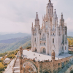
La sagrada familia
prev 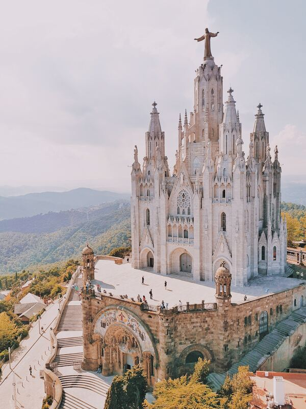next
La sagrada familia
Barcelona, Spanyol.
B asílica i Temple Expiatori de la Sagrada Família,[a] shortened as the Sagrada Família, is an under construction church in the Eixample district of Barcelona, Catalonia, Spain. It is the largest unfinished Catholic church in the world. Designed by architect Antoni Gaudí (1852–1926), his work on Sagrada Família is part of a UNESCO World Heritage Site. On 7 November 2010, Pope Benedict XVI consecrated the church and proclaimed it a minor basilica.
On 19 March 1882, construction of the Sagrada Família began under architect Francisco de Paula del Villar. In 1883, when Villar resigned, Gaudí took over as chief architect, transforming the project with his architectural and engineering style, combining Gothic and curvilinear Art Nouveau forms. Gaudí devoted the remainder of his life to the project, and he is buried in the church's crypt. At the time of his death in 1926, less than a quarter of the project was complete.
Relying solely on private donations, the Sagrada Família's construction progressed slowly and was interrupted by the Spanish Civil War. In July 1936, anarchists from the FAI set fire to the crypt and broke their way into the workshop, partially destroying Gaudí's original plans.In 1939, Francesc de Paula Quintana took over site management, which was able to go on due to the material that was saved from Gaudí's workshop and that was reconstructed from published plans and photographs. Construction resumed to intermittent progress in the 1950s. Advancements in technologies such as computer-aided design and computerised numerical control (CNC) have since enabled faster progress and construction passed the midpoint in 2010. However, some of the project's greatest challenges remain, including the construction of ten more spires, each symbolising an important Biblical figure in the New Testament. It was anticipated that the building would be completed by 2026, the centenary of Gaudí's death,but this has now been delayed due to the COVID-19 pandemic.
Describing the Sagrada Família, art critic Rainer Zerbst said "it is probably impossible to find a church building anything like it in the entire history of art",[16] and Paul Goldberger describes it as "the most extraordinary personal interpretation of Gothic architecture since the Middle Ages".[17] The basilica is not the cathedral church of the Archdiocese of Barcelona, as that title belongs to the Cathedral of the Holy Cross and Saint Eulalia
Visit on Google Maps
-
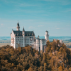
Neuschwanstein Castle
prev 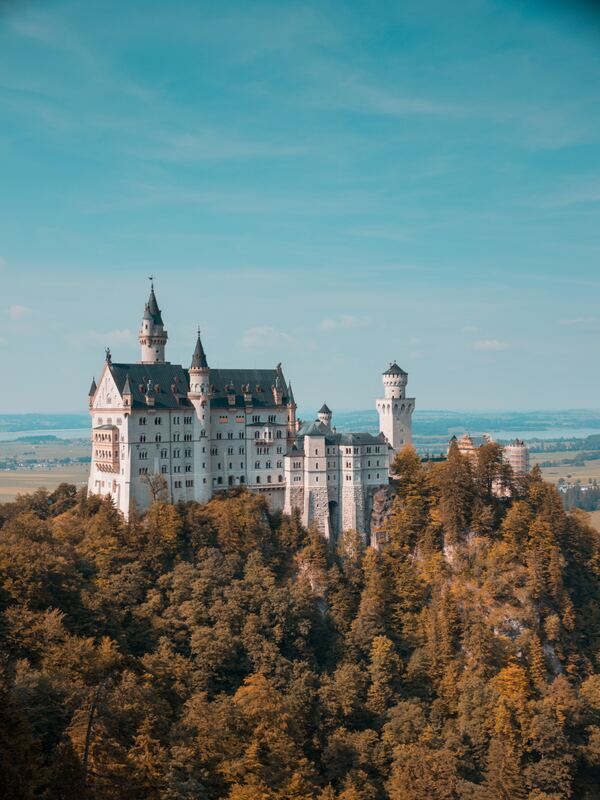next
Neuschwanstein Castle
España Neuschwansteinstraße 20, 87645 Schwangau, Jerman
N euschwanstein Castle is a 19th-century historicist palace on a rugged hill of the foothills of the Alps in the very south of Germany, just north of Austria. It is located in the Swabia region of Bavaria, in the municipality of Schwangau, above the incorporated village of Hohenschwangau, which is also the location of Hohenschwangau Castle. The closest larger town is Füssen. The castle stands above the narrow gorge of the Pöllat [de] stream, east of the Alpsee and Schwansee lakes, close to the mouth of the Lech into Forggensee.
Despite the main residence of the Bavarian monarchs at the time—the Munich Residenz—being one of the most extensive palace complexes in the world, King Ludwig II of Bavaria felt the need to escape from the constraints he saw himself exposed to in Munich, and commissioned Neuschwanstein Palace on the remote northern edges of the Alps as a retreat but also in honour of composer Richard Wagner, whom he greatly admired.
Ludwig chose to pay for the palace out of his personal fortune and by means of extensive borrowing rather than Bavarian public funds. Construction began in 1869 but was never completed. The castle was intended to serve as a private residence for the king but he died in 1886, and it was opened to the public shortly after his death. Since then, more than 61 million people have visited Neuschwanstein Castle. More than 1.3 million people visit annually, with as many as 6,000 per day in the summer.
Visit on Google Maps
yunani & vatikan
-
 st peter basilica
prev
st peter basilica
prev next
nextst peter basilica
Piazza San Pietro, 00120 Città del Vaticano, Vatikan
S aint Peter's Basilica (Latin: Basilica Sancti Petri), is a church built in the Renaissance style located in Vatican City, the papal enclave that is within the city of Rome, Italy. It was initially planned in the 15th century by Pope Nicholas V and then Pope Julius II to replace the aging Old St. Peter's Basilica, which was built in the fourth century by Roman emperor Constantine the Great. Construction of the present basilica began on 18 April 1506 and was completed on 18 November 1626.
Designed principally by Donato Bramante, Michelangelo, Carlo Maderno and Gian Lorenzo Bernini, St. Peter's is the most renowned work of Renaissance architecture and the largest church in the world by interior measure. While it is neither the mother church of the Catholic Church nor the cathedral of the Diocese of Rome (these equivalent titles being held by the Archbasilica of Saint John Lateran in Rome), St. Peter's is regarded as one of the holiest Catholic shrines. It has been described as "holding a unique position in the Christian world", and as "the greatest of all churches of Christendom."
Catholic tradition holds that the basilica is the burial site of Saint Peter, chief among Jesus's apostles and also the first Bishop of Rome (Pope). Saint Peter's tomb is supposedly directly below the high altar of the basilica, also known as the Altar of the Confession.For this reason, many popes have been interred at St. Peter's since the Early Christian period.
St. Peter's is famous as a place of pilgrimage and for its liturgical functions. The pope presides at a number of liturgies throughout the year both within the basilica or the adjoining St. Peter's Square; these liturgies draw audiences numbering from 15,000 to over 80,000 people. St. Peter's has many historical associations, with the early Christian Church, the Papacy, the Protestant Reformation and Catholic Counter-Reformation and numerous artists, especially Michelangelo. As a work of architecture, it is regarded as the greatest building of its age.St. Peter's is one of the four churches in the world that hold the rank of Major papal basilica, all four of which are in Rome, and is also one of the Seven Pilgrim Churches of Rome. Contrary to popular misconception, it is not a cathedral because it is not the seat of a bishop; the cathedra of the pope as bishop of Rome is at Saint John Lateran.
Visit on Google Maps
-
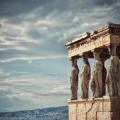
acropolis-of-athens
prev 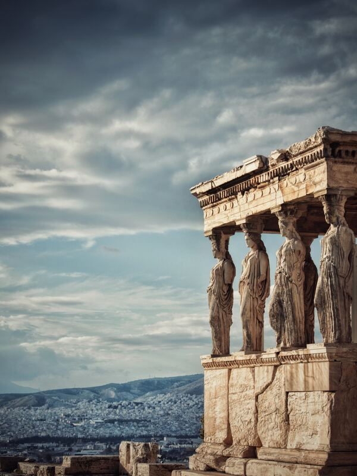next
Acropolis of athens
Athena 105 58, Yunani
A cropolis of Athens (Ancient Greek: ἡ Ἀκρόπολις τῶν Ἀθηνῶν, romanized: hē Akropolis tōn Athēnōn; Modern Greek: Ακρόπολη Αθηνών, romanized: Akrópoli Athinón) is an ancient citadel located on a rocky outcrop above the city of Athens, Greece, and contains the remains of several ancient buildings of great architectural and historical significance, the most famous being the Parthenon. The word Acropolis is from the Greek words ἄκρον (akron, "highest point, extremity") and πόλις (polis, "city").The term acropolis is generic and there are many other acropoleis in Greece. During ancient times the Acropolis of Athens was also more properly known as Cecropia, after the legendary serpent-man Cecrops, the supposed first Athenian king.
While there is evidence that the hill was inhabited as early as the fourth millennium BC, it was Pericles (c. 495–429 BC) in the fifth century BC who coordinated the construction of the buildings whose present remains are the site's most important ones, including the Parthenon, the Propylaea, the Erechtheion and the Temple of Athena Nike. The Parthenon and the other buildings were seriously damaged during the 1687 siege by the Venetians during the Morean War when gunpowder being stored by the then Turkish rulers in the Parthenon was hit by a Venetian bombardment and exploded. shrine.
Visit on Google Maps